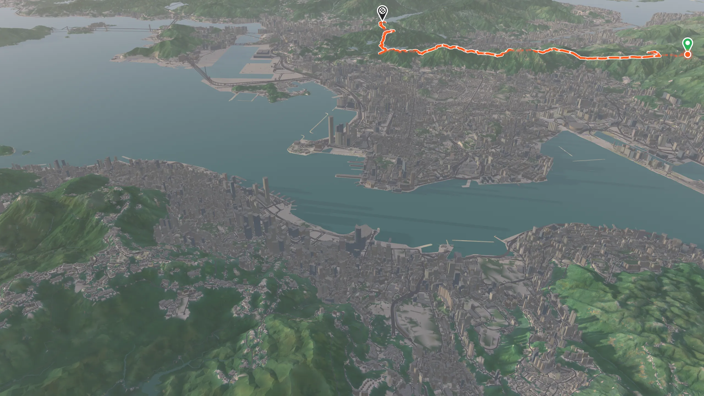
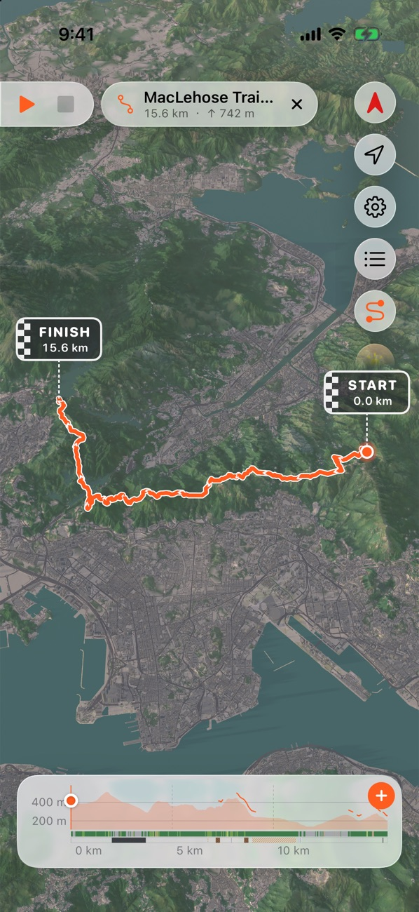
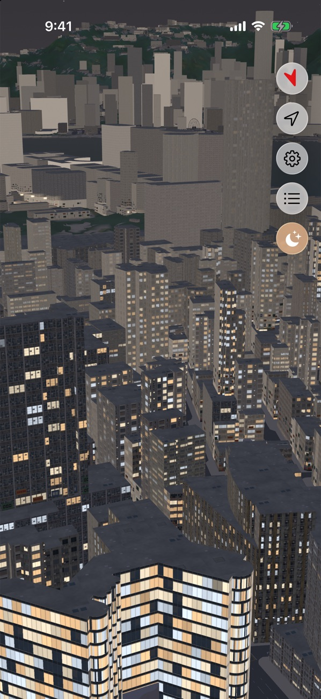
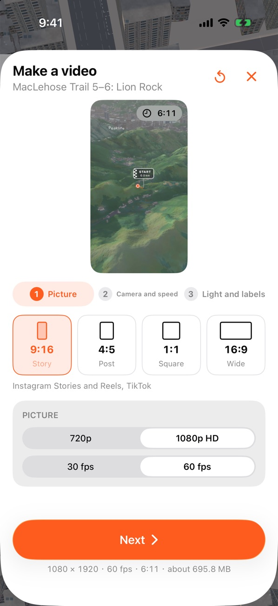

Hong Kong, in 3D.全港，立體呈現。
Every hill, street and harbour, drawn on your iPhone. Every frame here is Peakline's own map.每座山、每條街、每個海港，都在你的 iPhone 上立體呈現。這裏的每一格畫面，都出自 Peakline 的地圖。
Every street.每一條街。
Buildings, flyovers and the markings on the road, from the Government's own survey.大廈、天橋以至路面標記，全部來自政府的測繪數據。
Every hill.每一座山。
The real shape of every ridge and valley, from Lantau to Sai Kung, in the light of the hour.由大嶼山到西貢，每道山脊、每個山谷的真實地形，在當刻的光影之下。
Your trail, in its place.你的路線，回到原地。
Open a GPX from any app. Peakline lays it over the hills, with its climb and your checkpoints.從任何 App 打開 GPX，Peakline 把它鋪在山上，連同爬升和你的檢查站。
Then the city lights up.然後，城市亮起來。
Choose any hour. After sunset, windows light up one by one, each building on its own hours, under the real stars.隨意選擇時間。日落之後，窗戶逐一亮起，每幢大廈各有作息，頭上是真實的星空。
Fly it. Share it.飛越它，分享它。
Turn your trail into a flight over Hong Kong, at golden hour or under the stars, and share the video.把你的路線變成一段飛越香港的影片，黃昏或星空下都可以，再分享出去。
Free to explore. iPhone with iOS 26 or later.免費探索地圖。需要 iOS 26 或以上的 iPhone。
Every hill.
Every street.每座山。
每條街。
A clean, stylised 3D model of the whole territory, from the Government's own survey data: buildings, flyovers, terrain, roads and their markings. Smooth to pan, turn and tilt. 以政府測繪數據建成、簡潔立體的全港模型：大廈、天橋、地形、道路以至路面標記。平移、旋轉、傾斜都流暢自如。
-
All of Hong Kong全港覆蓋
From Lantau's peaks to Sai Kung's coast, in detail you can download once and keep.由大嶼山的山峰到西貢的海岸，詳細地圖下載一次就一直保存。
-
Any hour of the day任何時刻的光影
The real sun and shadows for any moment, haze by the season, and the sky as it is.任何時刻的真實日照與陰影、隨季節變化的煙霞，以及真實的天空。
-
Where you are你在哪裏
Your place on the map, the way you face, and how sure the fix is. Only on your iPhone.你在地圖上的位置、面向和定位準確度，只在你的 iPhone 上使用。

The city lights up.城市亮起來。
As the sun goes down, windows light up across Kowloon, street lights glow along the roads, and the stars and planets come out where they really are. 日落之後，九龍的窗戶逐一亮起，街燈沿路發光，星星和行星在真實的位置出現。
Lit windows亮燈的窗
From evening, going out by dawn.由黃昏亮起，到清晨前熄滅。
Real stars真實星空
Thousands of stars and five planets.數千顆恆星與五大行星。

Your trail, in its place.你的路線，回到原地。
Open any GPX file — from your watch, a race, a friend's WhatsApp — and see it laid on the hills it climbs. 打開任何 GPX 檔案，無論來自手錶、比賽還是朋友的 WhatsApp，都會鋪在它攀越的山上。
Open from any app任何 App 都可打開
Share a GPX to Peakline and it's there, kept once, ready to play.把 GPX 分享到 Peakline 就會出現，不會重複儲存，隨時播放。
Elevation and what's underfoot高度與腳下路面
The climb along the way, the surface — asphalt, steps, dirt — and the land around it.沿途的爬升、路面（柏油、樓梯、泥路）以及周圍的地貌。
Checkpoints檢查站
Add a race's CPs on the elevation, rename them, and take them with the file when you share it.在高度圖上加入比賽檢查站、為它們改名，分享 GPX 時一併帶走。
Fly it.
Share it.飛越它。
分享它。
Turn your trail into a flyover video in a few taps: the camera follows you up every ridge, the light runs from dawn to dusk, and your distance and climb count up as you go. 幾下就能把路線變成飛越影片：鏡頭跟著你攀上每道山脊，光線由清晨變到黃昏，距離和爬升隨之累計。

Yours, and only yours.只屬於你。
No account to make. No ads, no analytics, no tracking. Your routes, your location and your videos stay on your iPhone. 不用註冊帳戶。沒有廣告、沒有分析工具、沒有追蹤。你的路線、位置和影片都留在你的 iPhone 上。
Questions常見問題
Does it work without a connection?沒有網絡可以用嗎？
Yes. The map is on your iPhone: Yau Tsim Mong comes with the app, and the detailed map of all Hong Kong is a one-time download. Your location comes from GPS.可以。地圖儲存在你的 iPhone 上：油尖旺隨 App 附送，全港詳細地圖只需下載一次。位置來自 GPS。
Can I use it to navigate on the hills?可以用來在山上導航嗎？
Peakline is for planning, reliving and sharing. Map data can be out of date, so don't rely on it alone where your safety depends on it: check the weather, carry a proper map and tell someone your route.Peakline 用於規劃、重溫和分享。地圖資料可能過時，在涉及安全的情況下切勿只依賴它：出發前留意天氣、帶備地圖，並告訴別人你的路線。
Where does the map come from?地圖資料從哪裏來？
Buildings, terrain and roads come from the HKSAR Government's open data (Lands Department, through the CSDI Portal and DATA.GOV.HK); paths' surfaces and steps from OpenStreetMap contributors. The full credits are in the app.大廈、地形和道路來自香港特區政府的開放數據（地政總署，經空間數據共享平台及資料一線通）；路面及樓梯資料來自 OpenStreetMap 貢獻者。完整鳴謝見 App 內。
Do I need an account? How do purchases work?需要帳戶嗎？購買如何運作？
No account. Purchases go through the App Store and stay with your Apple ID: restore them in Settings on a new iPhone. Pro renews until you cancel it in your App Store subscriptions.不需要帳戶。購買經 App Store 進行並跟隨你的 Apple ID，換新 iPhone 時可在設定中恢復購買。Pro 會自動續期，直至你在 App Store 訂閱中取消。
Is there an Android version?有 Android 版嗎？
Peakline starts on iPhone.Peakline 先推出 iPhone 版。
Need a hand?需要協助？
Questions, bugs or ideas for Peakline: tell us, and we'll get back to you. 有任何問題、錯誤報告或建議，歡迎告訴我們，我們會盡快回覆。
Contact support聯絡支援